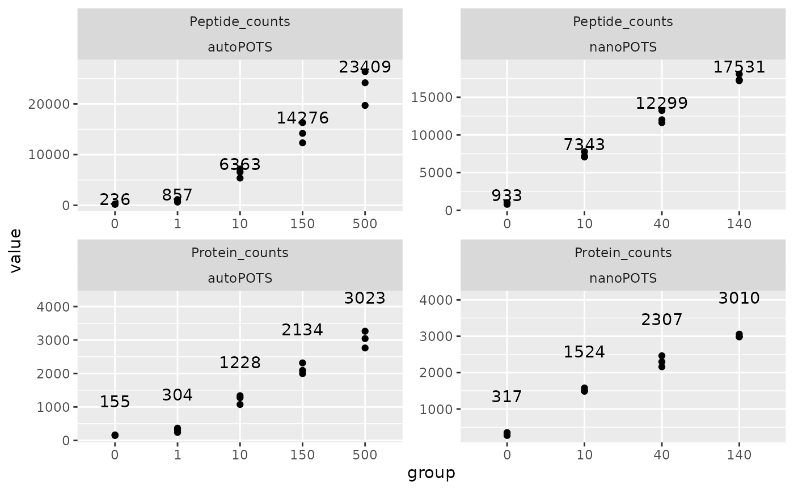

Exploring the autoPOTS data (Liang et al. 2020)
Christophe Vanderaa, Computational Biology, UCLouvain
Laurent Gatto, Computational Biology, UCLouvain
5 October 2022
liang2020.RmdIntroduction
autoPOTS (Liang et al. (2020)) is an acquisition protocol for label-free mass spectrometry (MS)-based single-cell proteomics (SCP). It relies on commercial material and is meant to be widely adopted and applied. Its development derives from the nanoPOTS technology (Zhu et al. (2018)) that uses custom-built instruments that are hardly transferable to other laboratories. Therefore, autoPOTS is the first attempt to provide a reproducible label-free SCP acquisition workflow.
While many efforts are put on a reproducible technology, the authors
do not address the reproducibility of the downstream data analysis. We
here tackle this issue by showing that the scp package can
be used to manipulate and process the data. We improve upon the results
shown in the article and demonstrate that scp is a keystone
for principled and rigorous data exploration.
Running this vignette requires the SCP.replication
package:
library("SCP.replication")
scp workflow and data structure
The data processing workflow we carry out in this vignette is inferred from the methods section of the paper. Since no reproducible data analysis script was provided, we are not able to accurately evaluate the accuracy of the replication of the results. We will rely on Figure S5 to assess the replication. This vignette will also extend the results to better assess the quality of the provided data.
To run the vignette you will need the following packages:
scpdata and the autoPOTS dataset
The authors provided 4 data sets related to the article:
- HeLa samples containing 0, 1, 10, 150 and 500 cells. Peptides and proteins were identified and quantified using MaxQuant.
- HeLa samples containing 0, 1, 10, 150 and 500 cells. Peptides and proteins were identified using FragPipe.
- HeLa samples containing 0, 10, 100 and 500 cells. Peptides and proteins were identified using FragPipe.
- Lymphocyte samples containing 10 cells. Peptides and proteins were identified using FragPipe.
Since no quantification data is available for the FragPipe data sets,
we here only use the MaxQuant output. We retrieved the data from the
PXD021882 repository. We formatted the data to a QFeatures
object following the scp data format (more information can
be found in the scp
vignette). This formatted data is available directly from the
scpdata package (Vanderaa and Gatto
(2022)):
autoPOTS <- liang2020_hela()The data contain 17 different SingleCellExperiment
objects that we refer to as assays. Each assay contains
expression data along with feature metadata. Each row in an assay
represents a feature that can either be a PSM, a
peptide or a protein depending on the assay. Each column in an assay
represents a sample. Below, we show the overview of the
autoPOTS dataset.
autoPOTS
## An instance of class QFeatures containing 17 assays:
## [1] HeLa_0cell_B16: SingleCellExperiment with 1153 rows and 1 columns
## [2] HeLa_0cell_B18: SingleCellExperiment with 1214 rows and 1 columns
## [3] HeLa_0cell_B4: SingleCellExperiment with 1366 rows and 1 columns
## ...
## [15] HeLa_500cell_K8: SingleCellExperiment with 35054 rows and 1 columns
## [16] peptides: SingleCellExperiment with 48705 rows and 15 columns
## [17] proteins: SingleCellExperiment with 3970 rows and 15 columns15 out of the 17 assays are PSM data, each assay corresponding to a
separate MS run. Since LFQ acquisitions contain a single sample per MS
run, those 15 assays contain a single column. The dataset also contains
a peptides assay and a proteins assay that
hold peptide and protein level information,respectively. Those assays
were produced by the authors after running MaxQuant.
The data set also contains samples annotations that can be retrieved
from the colData of the QFeatures object. The
annotation contains the exact number of HeLa cells in each sample, but
also additional information about cell type, sample preparation method,
or MS2 settings.
colData(autoPOTS)
## DataFrame with 15 rows and 9 columns
## Raw.file nbCells SampleType IsolationMethod
## <character> <integer> <character> <character>
## HeLa_0cell_B16_sample HeLa_0cell... 0 HeLa micromanip
## HeLa_0cell_B18_sample HeLa_0cell... 0 HeLa micromanip
## HeLa_0cell_B4_sample HeLa_0cell... 0 HeLa micromanip
## HeLa_10cell_G4_sample HeLa_10cel... 10 HeLa micromanip
## HeLa_10cell_G8_sample HeLa_10cel... 10 HeLa micromanip
## ... ... ... ... ...
## HeLa_1cell_E14_sample HeLa_1cell... 1 HeLa micromanip
## HeLa_1cell_F8_sample HeLa_1cell... 1 HeLa micromanip
## HeLa_500cell_J5_sample HeLa_500ce... 466 HeLa dilution
## HeLa_500cell_K16_sample HeLa_500ce... 520 HeLa dilution
## HeLa_500cell_K8_sample HeLa_500ce... 540 HeLa dilution
## MS2exclusionTime_s MS2accumulationTime_ms MS2resolution
## <integer> <integer> <integer>
## HeLa_0cell_B16_sample 90 500 60000
## HeLa_0cell_B18_sample 90 500 60000
## HeLa_0cell_B4_sample 90 500 60000
## HeLa_10cell_G4_sample 90 250 60000
## HeLa_10cell_G8_sample 90 250 60000
## ... ... ... ...
## HeLa_1cell_E14_sample 90 500 60000
## HeLa_1cell_F8_sample 90 500 60000
## HeLa_500cell_J5_sample 60 50 30000
## HeLa_500cell_K16_sample 60 50 30000
## HeLa_500cell_K8_sample 60 50 30000
## MS2AGC QuantificationColumn
## <integer> <character>
## HeLa_0cell_B16_sample 5000 Intensity
## HeLa_0cell_B18_sample 5000 Intensity
## HeLa_0cell_B4_sample 5000 Intensity
## HeLa_10cell_G4_sample 10000 Intensity
## HeLa_10cell_G8_sample 10000 Intensity
## ... ... ...
## HeLa_1cell_E14_sample 5000 Intensity
## HeLa_1cell_F8_sample 5000 Intensity
## HeLa_500cell_J5_sample 10000 Intensity
## HeLa_500cell_K16_sample 10000 Intensity
## HeLa_500cell_K8_sample 10000 IntensityTo facilitate later analysis, we will group the cell numbers in bins
of 0, 1, 10, 150 and 500 cells. Therefore, we add a new variable in the
colData containing this grouping.
group <- colData(autoPOTS)$nbCells
group[group > 130 & group < 170] <- 150
group[group > 450] <- 500
colData(autoPOTS)$group <- as.factor(group)
table(colData(autoPOTS)$group)
##
## 0 1 10 150 500
## 3 3 3 3 3We remove the peptides and proteins to keep
only the PSM data. We can subset a QFeatures object using
the simple bracket operation. The desired elements/assays can be
selected following the [row, col, assay] syntax.
autoPOTS <- autoPOTS[, , 1:15]Process the data
In this section, we perform data processing as described in the methods section. This consist of two steps: i) removing reverse hits, peptides flagged as contaminants and keep only unmodified peptides, ii) replace missing data by NA. We will also load another data set containing data generated by nanoPOTS to compare the efficiency of autoPOTS against its parent technology. The nanoPOTS data will be processed in a similar way.
autoPOTS
We start by filtering out undesired PSMs. Each PSM assay contains
feature meta-information that are stored in the rowData of
the assay. The QFeatures package allows to quickly filter
the rows of an assay by using these information. The available variables
in the rowData are listed below for each assay.
rowDataNames(autoPOTS)
## CharacterList of length 15
## [["HeLa_0cell_B16"]] Sequence Length ... Best.MS.MS Oxidation..M..site.IDs
## [["HeLa_0cell_B18"]] Sequence Length ... Best.MS.MS Oxidation..M..site.IDs
## [["HeLa_0cell_B4"]] Sequence Length ... Best.MS.MS Oxidation..M..site.IDs
## [["HeLa_10cell_G4"]] Sequence Length ... Best.MS.MS Oxidation..M..site.IDs
## [["HeLa_10cell_G8"]] Sequence Length ... Best.MS.MS Oxidation..M..site.IDs
## [["HeLa_10cell_H2"]] Sequence Length ... Best.MS.MS Oxidation..M..site.IDs
## [["HeLa_150cell_I12"]] Sequence Length ... Best.MS.MS Oxidation..M..site.IDs
## [["HeLa_150cell_I16"]] Sequence Length ... Best.MS.MS Oxidation..M..site.IDs
## [["HeLa_150cell_I18"]] Sequence Length ... Best.MS.MS Oxidation..M..site.IDs
## [["HeLa_1cell_E12"]] Sequence Length ... Best.MS.MS Oxidation..M..site.IDs
## ...
## <5 more elements>Among those feature variable are Reverse,
Potential.contaminant and Modifications that
allow to filter for peptides that are not matched to a reversed
sequence, that are not matched to a contaminant peptide and that are
unmodified, respectively. We can perform this on the
QFeatures object by using the filterFeatures
function. The filters can be directly applied to the
rowData variables of each assay.
autoPOTS <- filterFeatures(autoPOTS,
~ Reverse != "+" &
Potential.contaminant != "+" &
Modifications == "Unmodified")Then, we replace zero values by NA to explicitly encode
the missing data. This is performed using the zeroisNA
function.
nanoPOTS
In the article, the authors compare their recent results to the
nanoPOTS results published in 2018 (Zhu et al.
(2018)). This data is readily available in scpdata.
The data set contains several types of samples: blanks, HeLa lysates,
HeLa cells, MCF7 cells and THP1 cells. We will only keep the HeLa cells
and the blanks.
nanoPOTS <- zhu2018NC_hela()
nanoPOTS <- nanoPOTS[, nanoPOTS$SampleType %in% c("Hela", "Blank"), ]
nanoPOTS
## An instance of class QFeatures containing 2 assays:
## [1] peptides: SingleCellExperiment with 37795 rows and 12 columns
## [2] proteins: SingleCellExperiment with 3984 rows and 12 columnsNote that the PSM quantification data is not available for the
autoPOTS, but this is not an issue since we will mainly
focus on peptide or protein information. We perform the same data
cleaning as for autoPOTS.
nanoPOTS <- filterFeatures(nanoPOTS,
~ Reverse != "+" &
Potential.contaminant != "+")
nanoPOTS <- zeroIsNA(nanoPOTS, names(nanoPOTS))To further make the two data sets comparable, we remove observations that were identified using match between run, because this option was disabled for autoPOTS.
matchTypeCols <-
grep("Identification.type.Hela", colnames(rowData(nanoPOTS[[1]])))
isMBR <- as.matrix(rowData(nanoPOTS[[1]])[, matchTypeCols]) == "By matching"
assay(nanoPOTS[[1]])[isMBR] <- NAFinally, just like for the autoPOTS dataset, we bin the cell numbers into groups.
group <- colData(nanoPOTS)$nbCells
group[group > 130 & group < 145] <- 140
group[group > 30 & group < 50] <- 40
group[group > 9 & group < 15] <- 10
colData(nanoPOTS)$group <- as.factor(group)
table(colData(nanoPOTS)$group)
##
## 0 10 40 140
## 3 3 3 3Unfortunately, no true single-cell is available from this dataset, but sample still contain very low amounts of cells.
Feature counts
The feature counts are the only results that are shown for the HeLa data set. Since we are using the quantifications generated by MaxQuant, we can relate to Figure S5.

Figure S5 from Liang et al. 2020.
We count the unique number of peptides and proteins for each data set
using the countUniqueFeatures from the
Qfeatures package. To perform this, we need to supply the
grouping variables. Peptides are identified by Sequence
(i.e the peptide sequence) and proteins are identified by
Leading.razor.protein. Note that the features are counted
from the PSM data for the autoPOTS dataset, we therefore supply all the
assay names to the function.
## Count peptides
autoPOTS <- countUniqueFeatures(autoPOTS,
i = names(autoPOTS),
groupBy = "Sequence",
colDataName = "Peptide_counts")
nanoPOTS <- countUniqueFeatures(nanoPOTS,
i = "peptides",
groupBy = "Sequence",
colDataName = "Peptide_counts")
## Count proteins
autoPOTS <- countUniqueFeatures(autoPOTS,
i = names(autoPOTS),
groupBy = "Leading.razor.protein",
colDataName = "Protein_counts")
nanoPOTS <- countUniqueFeatures(nanoPOTS,
i = "peptides",
groupBy = "Leading.razor.protein",
colDataName = "Protein_counts")Compare autoPOTs and nanoPOTS
We combine the sample data (colData) from the two data
sets. We then use ggplot2 to plot the peptides and protein
counts for each data set.
df <- rbind(colData(autoPOTS) %>%
data.frame %>%
dplyr::select(Protein_counts, Peptide_counts,
nbCells, group) %>%
mutate(dataset = "autoPOTS"),
colData(nanoPOTS) %>%
data.frame %>%
dplyr::select(Protein_counts, Peptide_counts,
nbCells, group) %>%
mutate(dataset = "nanoPOTS")) %>%
pivot_longer(cols = ends_with("counts"))
## Plot
ggplot(df) +
aes(y = value,
x = group) +
geom_point() +
geom_text(data = . %>%
group_by(group, dataset, name) %>%
summarise(mean = mean(value),
group = unique(group),
y = max(value) + 1000),
aes(y = y,
label = round(mean))) +
facet_wrap(name ~ dataset, scales = "free")
Watch out: this plot as well as the figure in the paper give the false impression of a linear increase. This is because the number of cells is treated as a factor and all categories are separated using an equal width. Let’s redo the bottom right plot, but using the cell as a numeric variable, hence using a numeric scale.
df %>%
data.frame %>%
ggplot() +
aes(x = nbCells,
y = value,
colour = dataset) +
geom_point() +
geom_smooth(method = "lm", formula = y ~ poly(x, 2)) +
facet_wrap(~ name, scales = "free_y")The relationship between number of cells and detected features is
highly non-linear and the decreased performance of autoPOTS
compared to nanoPOTS is easier to assess.
Protein detection
In the autoPOTS data set
In Figure S5, the authors use a Venn diagram to show the overlap between the sets of proteins identified at different cell concentrations. While very intuitive, we dig a little bit deeper by providing an upset plot. Although upset plots are harder to read, they contain more information and make comparison between sets much easier.
First, we format the QFeatures object to a long
DataFrame using the longFormat function. This
will take the quantifications matrix and turn it in a single vector, and
add the desired feature and sample metadata. We also add a dataset
identifier for later use.
lfauto <- longFormat(autoPOTS[, ,grepl("HeLa", names(autoPOTS))],
colvars = c("nbCells", "group"),
rowvars = "Leading.razor.protein")
lfauto$dataset <- "autoPOTS"We then build the upset plot using the functionality from
upsetR.
lt <- fromList(split(lfauto$Leading.razor.protein,
paste(lfauto$group, "cells - autoPOTS")))
upset(lt,
nsets = 5,
order.by = "freq",
nintersects = 15,
keep.order = TRUE,
mainbar.y.label = "Proteins in intersection",
sets.x.label = "Proteins",
mb.ratio = c(0.4,0.6))Several observations can be drawn from this graph:
- The largest common set is found between 10, 150 and 500 cells, but it does not include single-cells
- A great majority of the proteins are found in the 500 cell samples this indicates that working with smaller sample sizes cover a fraction of the bulk proteome.
- There are 269 proteins found in all sample excluding blanks, and there are 177 proteins found in all sample including blanks. This indicates that about 40 % of the proteins found in single-cells are potentially caused by background signal (contamination by culture media or during sample processing).
autoPOTS against nanoPOTS
We will now compare to what extend the results obtained using the
autoPOTS technology are consistent with the previous data acquired using
the nanoPOTS technology. Similarly to the autoPOTS data
set, we format the nanoPOTS in a long table.
lfnano <- longFormat(nanoPOTS[, ,"peptides"],
colvars = c("nbCells", "group"),
rowvars = "Leading.razor.protein")
lfnano$dataset <- "nanoPOTS"We combine the long tables for the two data sets in a single table.
In order to compare the coverage between the two datasets, we keep only samples between 10 and 150 cells (common in both experimental designs). We then create the upset plot.
lfsub <- lf[lf$nbCells >= 1 & lf$nbCells <= 150, ]
lt <- fromList(c(split(lfsub$Leading.razor.protein, lfsub$dataset)))
upset(lt,
sets = names(lt),
order.by = "freq",
mainbar.y.label = "Proteins in intersection",
sets.x.label = "Proteins in sample",
mb.ratio = c(0.4,0.6))
The majority of the proteins (2300 out of 3721) are consistently
found by autoPOTS and nanoPOTS. A significant
number of proteins are found only by the nanoPOTS protocol. This is
probably due to its increase sensitivity compared to autoPOTS. Finally,
a few proteins are only found using the nanoPOTS technology.
Robustness of the detection
In the previous sections, we have seen that more proteins are identified in samples with more cells. In this section, we explore how robust the identification are across samples with the same number of cells. We focus on the autoPOTs data set only.
In 500-cell samples
We take again the autoPOTS data formatted as a long table, and subset only data points that were acquired in 500-cell samples. We make the upset plot to assess the consistency of the protein identification across those samples.
lt <- lfauto[lfauto$nbCells %in% 450:550, ]
lt <- fromList(split(lt$Leading.razor.protein, lt$colname))
upset(lt,
nsets = 17,
order.by = "freq",
nintersects = 30,
keep.order = TRUE,
mainbar.y.label = "Proteins in intersection",
sets.x.label = "Proteins",
mb.ratio = c(0.4,0.6))Almost 90% of the proteins are found among all 3 samples. This is shows that the protein detection and identification is highly consistent across samples.
In single-cells
We apply the same procedure for single-cell samples.
lt <- lfauto[lfauto$nbCells == 1, ]
lt <- fromList(split(lt$Leading.razor.protein, lt$colname))
upset(lt,
nsets = 17,
order.by = "freq",
nintersects = 30,
keep.order = TRUE,
mainbar.y.label = "Proteins in intersection",
sets.x.label = "Proteins",
mb.ratio = c(0.4,0.6))The results for single-cell samples are very different from the results shown above for 500-cell samples. For each single-cell sample, about 50 % of the identified proteins were also found in the two other samples. However, about a third of the proteins are only found in one of the single-cell samples, indicating a high variability in detection rates between single-cell samples. There are two possible explanations:
- Technical missingness: protein concentrations are too low in single-cell samples so that only a part of the most expressed proteins are detectable. This is subjected to stochastic effects (MS selection, heterogeneity of expression,…) that lead to different sets of identified proteins.
- Biological missingness: the inherent heterogeneity in single cells leads to the expression of different, but biologically meaningful, sets of proteins. The more cells are contained in a sample, the more diluted this heterogeneity is.
The most probable scenario is that there is a combination of the two types of missingness. However, it is not trivial to decouple technical and biological missingness. Synthetic samples are required to better assess which component of the missingness are more prominent.
In blanks
Applying the same exploration to blank samples allows to assess the background detection. Be it either due to technical contamination, computational artefacts (during peptide identification) or contamination from the culture environment.
lt <- lfauto[lfauto$nbCells == 0, ]
lt <- fromList(split(lt$Leading.razor.protein, lt$colname))
upset(lt,
nsets = 17,
order.by = "freq",
nintersects = 30,
keep.order = TRUE,
mainbar.y.label = "Proteins in intersection",
sets.x.label = "Proteins",
mb.ratio = c(0.4,0.6))As expected, the most frequent protein sets are specific to one of the blank samples indicating inconsistent signal in the data. However, 49 proteins (out of 302) are consistently found across all blanks indicating background contamination that probably also occurs in the single-cell samples.
Quantification levels
Intensity distribution
data.frame(lfauto) %>%
ggplot() +
aes(x = log10(value)) +
geom_histogram() +
facet_wrap(~ group, scales = "free_y", nrow = 1) +
ggtitle("autoPOTS") Intensity dependent identification
We expect that proteins that are expressed in all single-cells should be more expressed than proteins found in only in one or two cells or not found in single-cells. To assess this, we assume that the 500-cell samples approximate the population protein expression. We look at the median protein expression in those concentrated samples but separate the proteins based on the number of single-cells it was found in.
To plot this, we first need a table containing proteins found in single-cell samples and the number of single-cell samples in which each protein was found.
data.frame(lfauto) %>%
filter(!is.na(value),
nbCells == 1) %>%
group_by(Leading.razor.protein) %>%
summarise(n = length(unique(colname))) ->
scProtsAnother interesting information to plot is whether a protein is also found in a blank sample. We therefore create a table containing only information about blank samples.
data.frame(lfauto) %>%
filter(!is.na(value),
nbCells == 0) ->
blankProtsFinally we create a table containing only information about the 500-cell samples, that we consider as bulk samples. We compute the median expression for each proteins across all 500-cell samples. We then join the single-cell table to include the number single-cell samples in which each protein was found. Finally, we also include the information about whether each protein was found in a blank samples or not.
data.frame(lfauto) %>%
filter(!is.na(value),
nbCells %in% 450:550) %>%
group_by(colname, Leading.razor.protein) %>%
summarise(value = median(log10(value))) %>%
left_join(scProts, by = "Leading.razor.protein") %>%
mutate(n = ifelse(is.na(n), 0, n),
foundInBlank = Leading.razor.protein %in% blankProts$Leading.razor.protein) ->
dfAfter this advanced data wrangling, we can plot the relationship between the median protein intensity in bulk samples and the number of single-cell samples that a protein is found in.
ggplot(df) +
aes(y = value,
x = n) +
geom_jitter(aes(colour = foundInBlank),
alpha = 0.5, width = 0.25) +
geom_violin(aes(group = n), fill = "transparent") +
geom_smooth(formula = "y ~ x", method = "lm") +
scale_colour_manual(values = c("grey", "red")) +
ggtitle("Protein expression in 500-cell samples") +
ylab("log10 median protein expression") +
xlab("found in # single-cell samples")As expected from technical missingness, proteins that are found in more single-cell samples are proteins that have a higher expression distribution in bulk samples. However, the top 100 most expressed proteins in bulk samples are found between no and 3 single-cell samples, meaning that the protein detection probability not solely depends on protein expression. A disappointing observation is that a protein that is found in more single-cell samples has a higher chance to be also found in blanks samples. A great majority of the proteins found in all 3 single-cell samples were also found in blank samples, indicating that the background signal consist of highly expressed proteins that might have been released in the medium during the cell culture (blanks consist of culture media without cells) or by carry over of sample material between successive MS runs.
Quantification variability
Because bottom-up proteomics reconstruct protein data from several peptide fragments, it is possible to assess the quantification accuracy for each protein by assessing the variability among its constituting peptides.
Number of peptides per proteins
First, we have a look at the distribution of the number of peptides that are associated to a protein and assess the impact of the amount of sample material.
data.frame(lfauto) %>%
filter(!is.na(value)) %>%
group_by(colname, Leading.razor.protein, group) %>%
summarise(n = n()) %>%
ggplot() +
aes(x = n) +
geom_histogram(binwidth = 1) +
facet_grid(~ group) +
xlim(c(0, 75)) +
xlab("# peptides per protein")Irrespective of the amount of sample material, the mode of the distribution is one, meaning that many proteins are identified based on a single peptide or a low number of peptides. As more sample material is analysed, the distribution tails towards more peptides per proteins.
Median CVs
The coefficient of variation (CV) is a measure of the variability of
the peptide quantification for a protein. Using the
medianCVperCell function, we can compute this for all
proteins in all samples. The median CV in each sample is computed and
added to the colData, here we name the new varaible
medianCV. We only assess CVs for proteins with at least 5
peptides. Note that this means that the CV is computed for only for a
few proteins for blank and single-cell proteins (see plot above).
autoPOTS <- medianCVperCell(autoPOTS,
i = grep("HeLa", names(autoPOTS)),
groupBy = "Leading.razor.protein",
nobs = 5,
colDataName = "MedianCV")We plot the computed median CVs per sample against the number of
cells per sample. The required data are immediately available in the
colData.
Interestingly, the sample amount does not seem to influence the quantification variability.
Assess the nature of the proteins
Sections below are work in progress
Up to now, we saw that single-cells and
universe <- rbindRowData(autoPOTS, i = grep("HeLa", names(autoPOTS)))
universe <- unique(universe$Leading.razor.protein)In many cells samples
Biological process
common500 <- rbindRowData(autoPOTS, i = grep("500", names(autoPOTS)))
common500 <- unique(common500$Leading.razor.protein)
go_500 <- enrichGO(gene = common500,
OrgDb = org.Hs.eg.db,
keyType = "UNIPROT",
ont = "BP",
pvalueCutoff = 0.05,
pAdjustMethod = "BH",
universe = keys(org.Hs.eg.db, "UNIPROT"),
qvalueCutoff = 0.05,
minGSSize = 50,
maxGSSize = 200,
readable = FALSE,
pool = FALSE)
dotplot(go_500, showCategory = Inf)Cellular compartment
go_blank_CC <- enrichGO(gene = common500,
OrgDb = org.Hs.eg.db,
keyType = "UNIPROT",
ont = "CC",
pvalueCutoff = 0.05,
pAdjustMethod = "BH",
# universe = keys(org.Hs.eg.db, "UNIPROT"),
universe = universe,
qvalueCutoff = 0.05,
minGSSize = 200,
maxGSSize = 1000,
readable = FALSE,
pool = FALSE)
dotplot(go_blank_CC, showCategory = Inf)In blanks
This indicates contamination by skin cells? Let
Biological process
common0 <- rbindRowData(autoPOTS, i = grep("_0cell", names(autoPOTS)))
common0 <- unique(common0$Leading.razor.protein)
go_blank <- enrichGO(gene = common0,
OrgDb = org.Hs.eg.db,
keyType = "UNIPROT",
ont = "BP",
pvalueCutoff = 0.05,
pAdjustMethod = "BH",
universe = keys(org.Hs.eg.db, "UNIPROT"),
qvalueCutoff = 0.05,
minGSSize = 50,
maxGSSize = 200,
readable = FALSE,
pool = FALSE)
dotplot(go_blank, showCategory = Inf)Cellular component
go_blank_CC <- enrichGO(gene = common0,
OrgDb = org.Hs.eg.db,
keyType = "UNIPROT",
ont = "CC",
pvalueCutoff = 0.05,
pAdjustMethod = "BH",
# universe = keys(org.Hs.eg.db, "UNIPROT"),
universe = universe,
qvalueCutoff = 0.05,
minGSSize = 200,
maxGSSize = 1000,
readable = FALSE,
pool = FALSE)
dotplot(go_blank_CC, showCategory = Inf)In single-cells
commonSC <- rbindRowData(autoPOTS, i = grep("_1cell", names(autoPOTS)))
commonSC <- unique(commonSC$Leading.razor.protein)
go_sc <- enrichGO(gene = commonSC,
OrgDb = org.Hs.eg.db,
keyType = "UNIPROT",
ont = "BP",
pvalueCutoff = 0.05,
pAdjustMethod = "BH",
universe = universe,
qvalueCutoff = 0.05,
minGSSize = 50,
maxGSSize = 200,
readable = FALSE,
pool = FALSE)
dotplot(go_sc, showCategory = 20)Conclusion
This vignette reproduces the observations provided for Figure S5 in Liang et al. (2020). However, we have pushed the data exploration further and showed that looking at the number of detected features is not sufficient to demonstrate the quality of the data. We here argue that looking at the overlap of identified protein within and between experimental groups (number of cells per sample) provide a better understanding of the data structure, namely an increase of the protein detection variability when the number of cells decreases.
The increase in detection variability is the consequence of technical and biological processes. The development of synthetic ground truth data sets are required to decouple the two processes and assess the importance of one process with respect to the other. This will allow to highlight the room for improvement for new MS-SCP technologies.
TODO add paragraph: single-cell signal ~ blank signal -> list arguments => is autoPOTS really working for sc samples?
Finally, this vignette also provides a demonstration that using the
scp data framework is ideal for the manipulation and
visualization of MS-SCP data. The longFormat output that is
used throughout this vignette can be plugged in to powerful
visualization tools such as ggplot2 or upsetR.
This allowed an in-depth exploration of the data and hence we could
highlight some aspect of the data that were overlook in the original
paper.
Reproduce this vignette
You can reproduce this vignette using Docker:
docker pull cvanderaa/scp_replication_docker:v1
docker run \
-e PASSWORD=bioc \
-p 8787:8787 \
cvanderaa/scp_replication_docker:v1Open your browser and go to http://localhost:8787. The USER is rstudio
and the password is bioc. You can find the vignette in the
vignettes folder.
See the website home page for more information.
Licence
This vignette is distributed under a CC BY-SA licence licence.